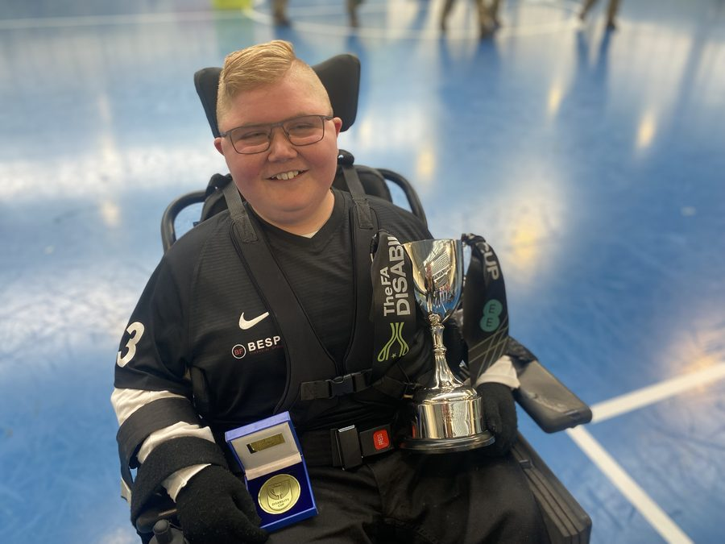
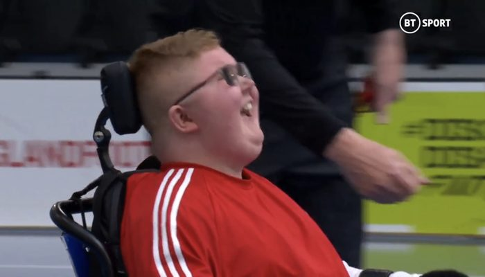
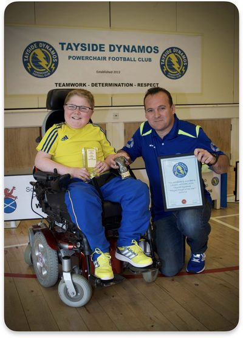
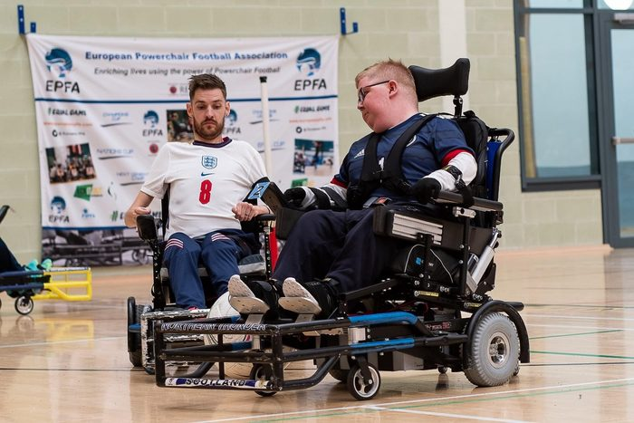
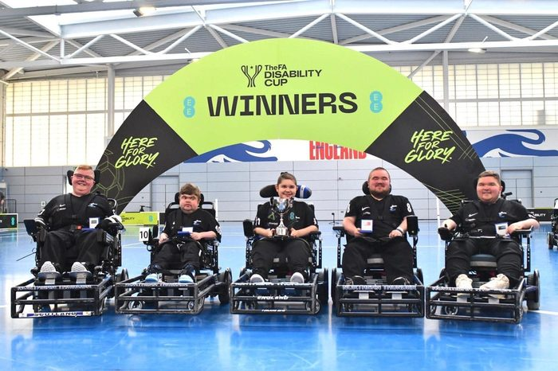
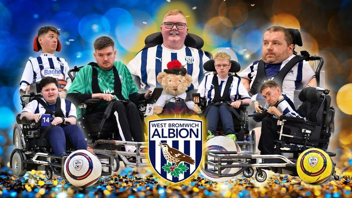
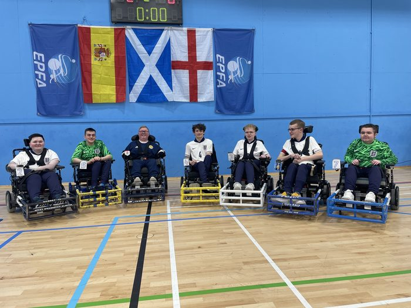

Logan was a happy and enthusiastic young man living with Duchenne Muscular Dystrophy, a life-shortening, degenerative muscle wasting condition affecting approximately 1 in 3,500 boys. Despite being wheelchair-bound since age 10 and facing countless daily challenges that most take for granted, Logan went through life with a smile and took on every challenge with an unwavering determination to succeed.
His gentleness, cheeky nature, and infectious smile touched everyone he met. Logan was the happiest of people, and his greatest joys were family, friends, X-box, and football. His energy and enthusiasm were extraordinary, and he lived each day determined to be the best that he could be.
In 2015, during a para-sport festival in Dundee, Logan had a taster session in PowerChair Football and was instantly hooked. From that day forward, he challenged himself to improve his skills every single day. The commitment Logan showed was something quite extraordinary, comprising 1 or 2 club training sessions per week, 3 or 4 personal training sessions per week, nightly video analysis, and monthly Scotland training sessions - beyond that of most able-bodied athletes and absolutely remarkable for an individual facing the challenges that a boy living with Duchenne faces each minute of each day.

In a short football career spanning less than 7 seasons, Logan became the only Scottish player to have competed in and won the FA Disability Cup Final. He is the only player to have won all the National Leagues and Cups in Great Britain, making him a true legend of the sport.

Logan started playing with his local club, Tayside Dynamos, and rapidly progressed to become one of their main players. Over 4 seasons, he helped Tayside Dynamos win every title in Scotland. One notable performance was being brought on as a substitute in the final cup game in 2017 to help his team win the game and the cup - remarkable as he was playing just 2 weeks after having ankle surgery and with both legs in plaster casts. PowerChair Football was truly the best pain remedy ever!

Logan's selection into the Scotland National Squad at its establishment in 2018 was a very proud moment. He quickly became one of Scotland's top players, with his infamous opening goal at the Home Nations Tournament in 2022. He was pivotal to Scotland's qualification for the 2025 Euros with success at the 2022 Geneva Cup tournament, where he was personally awarded top playmaker. Logan played every game since the team's inception and was awarded 30 caps for his country.

Never happy to select the easy path, Logan challenged himself to take his game to its next level. He knew he had to play in England to progress - to play with and against the greatest players in the greatest league in the world. He swapped weekly training sessions just 20 minutes from home for initially 12-hour twice-weekly round trips to Newcastle.
Playing alongside England National squad stars, Logan loved being part of the Thunder team and learnt so much. In his first premiership game in Nottingham, he was welcomed by the whole England football community, and the love and support he received continued for the whole of his football career.
Logan's most prestigious moment came in 2022 when he helped Northern Thunder secure their first ever cup win against the top English team, West Bromwich Albion, in the FA Disability Cup Final televised live on BT Sport.
Playing as goalkeeper, Logan made 43 saves in 50 minutes. When the match went to penalties, he saved 3 from 4 to bring the cup home. He was named Man of the Match.

In 2023, Logan tried out for West Bromwich Albion and was thrilled when asked to join one of the greatest PowerChair Football teams in the world.

Logan's last Scotland tournament was in Largs in March 2024, where he faced many of his current and former teammates and friends from England. During the match he received a red card and so was eliminated from the remainder of the tournament. Scotland was due to play England again and such was the love and admiration for Logan from his English team-mates that they appealed each and every one of them to allow Logan to play in the final. Logan was as Scottish as you could get yet the English PowerChair football community had adopted him as one of their own.
The Celebration of Logan's life was attended by his Scotland team-mates, coaches and management team, players from each Scottish club, his WBA team-mates and players from other English teams including the English manager, 5 English National team players and one from Argentina.
Scotland #2 | West Bromwich Albion #7
His name and number live on in PowerChair forever.